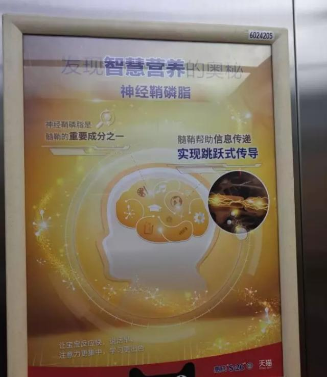
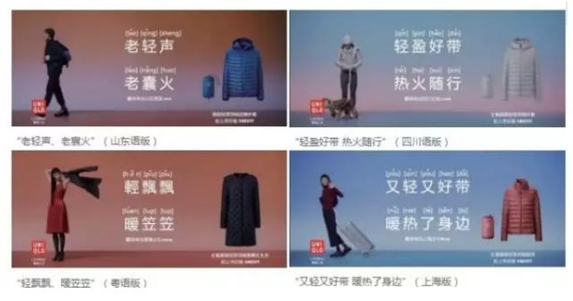
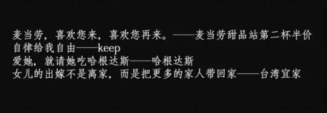
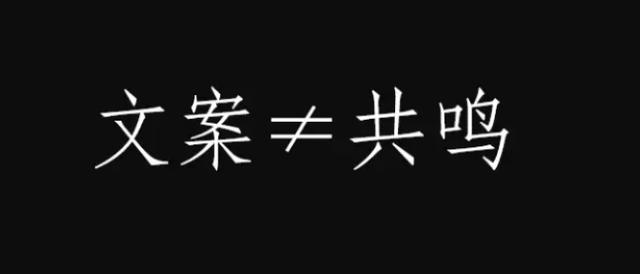
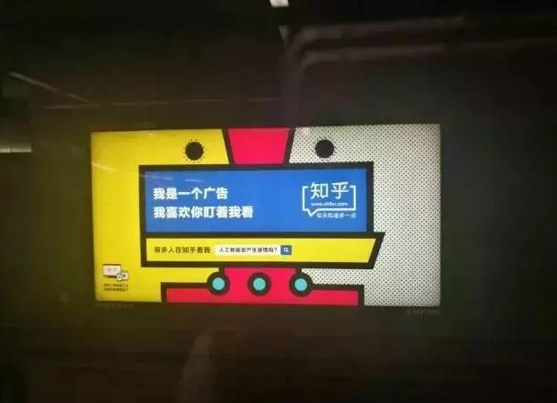
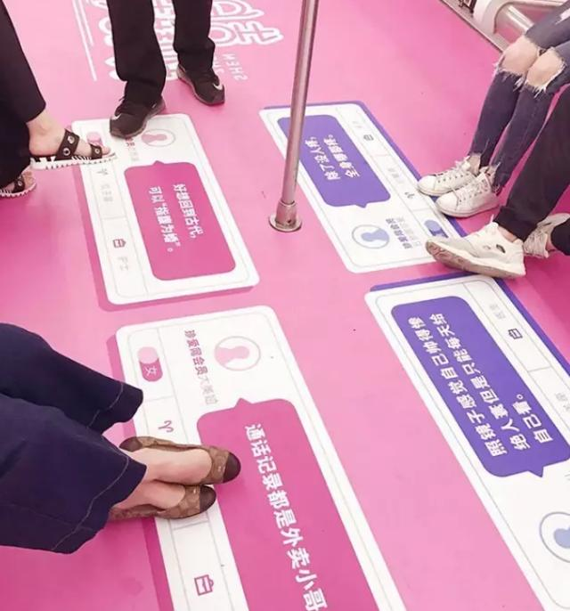

文章通过具体案例分析，总结了6个经常出现的文案写作误区，希望给读者们带来启发。
是，你感觉写的很棒。
“厉害了我的哥”、“扎心了老铁！”、“敌军还有五秒到达战场！”、“Hin可爱”、“我可能用了假的XXX”，没错，你写的文案紧扣互联网文化脉搏，网络流行语玩得溜溜的。
“反正你都够胖了，少喝一杯也不会变轻的。 ”、“ 我们只有单人桌，反正你也没有朋友。 ”、“ 喝完快走，别自拍了，你长得又不好看。 ”（文案摘自丧茶）
是啊，你写的微信推文活用丧文化、反鸡汤，网易、珍爱网式UGC文案信手拈来，但为什么只是自己看的热闹，并没有激发消费者的购买欲望呢？
出现这种问题，很可能是因为你触犯了文案写作的六个禁忌。
一、官方架子端上天
很多老板认为自己的产品（实业或者APP）绝无仅有，切入了一个大家都没有发现的高端市场，会无意识的端起架子告诉消费者：我这东西不是给普通人用的，你不懂我的产品说明你就是普通人。这种盲目自信会引起消费者反感。
具体来说，以下这样文案就是典型的官方视角：
- 小米NOTE2：一面科技，一面艺术（二皮脸？）
- 奔驰文案：跨越地域时空，点燃世界激情（多久没吃药了？）
- 宝马文案：历未历之境，几番震撼（诘曲聱牙就是高逼格？）
- 房产文案：魅惑价值，纵情奢华（你说魅惑就魅惑啦？）
还有，大家之前为什么会对陈欧的新广告不买账？（对对对，就是那个讲时代的那个片子）
很大程度上是因为陈欧把文案的高度升到了一个电商平台老板或者说是一个成功人士的拼命召唤，与消费者脱节的语言，消费根本无法理解。
《云层之上》视频文案 ：
你说，这是一个辛苦的时代，
想要生活，却只剩工作
你说，这是一个遗憾的时代
拥有金钱，却失去蓝天
你说，这是一个绝望的时代
再有梦想，也逃不过现实
你说，这是一个最坏的时代
命已注定，只剩麻木活着
我们是时代的造物
还是人创造了时代
每一次幻想，绘制了时代蓝图
每一次努力，燃起了生命的热血
每一次呐喊，提醒你我依然活着
每一次援手，传递了希望的力量
射哥之前提到过，好的文案是带入消费者体验产品，激发消费者购买欲望。
你一味的盛气凌人强势霸道，对你有兴趣的人也只会离你而去，最终从霸道总裁变成了孤独君王，让你的处境更堪忧。对于内容营销时代的文案人来说，这是不可原谅的。
二、勾画愿景当卖点
这个问题在很多企业中出现，包括大多数互联网企业。你如果问他们的企业文案你们公司是做什么的？
他们会这样回答：“我们要引领大家走向智慧新生活”、“让世界更美好”、“让财富自由奔跑”、“让天下没有难融的资金”等等。
愿景、简介、卖点，很多文案人容易混淆。
愿景是一家企业或者一个品牌想要完成的目标，让出行更便捷，让手机更智能，让服装更环保，让食品跟安全等，这样的文案是在传递未来的愿望。
但很多文案人甚至老板把愿景当作产品或品牌卖点，向消费者大声叫卖，仿佛谁的口号格局越大，消费者会越感兴趣。
- 汽车文案：征服道路
- 首饰文案：爱简单却不凡
- 运动文案：一起超越自我
- 健身文案：让我们变得更强壮
以上这些愿景型文案空洞无趣，500年后的承诺让消费者立刻感知到？简直天方夜谭啊！
之前雀巢邀请刘烨拍摄金牌咖啡系列产品的宣传片也是进入了一个把“愿景当卖点”的误区。
雀巢咖啡文案：
咖啡就像时间，只要你够专心，
该给你的，都会给你。
有人问过我，怎么算得上匠人？
我说，就是一辈子只爱一件事吧。
一生一事一杯匠心
宣传片中刘烨为消费者勾画了一个“为了收获，让我们现在专心致志”的美好愿望，这样的愿望无法与雀巢金牌咖啡的卖点联系在一起。
类似的愿景式文案还有很多，鉴于篇幅不一一展开了。
三、专业术语乱忽悠
“大数据算法”、“区块链”、“双色阳极氧化配合”、“系统误差”、“半胱氨酸组氨酸”、“共轭双键”，为了像消费者表明自身产品或品牌的专业性，很多新人（也可能是老板要求）在文案中穿插各种各样的专业术语：瞧啊，这些术语你们都没听说过吧？都是描述我的产品的！牛逼吧？快来买吧！
但事实上呢，呵呵，这是文案人或者老板的一厢情愿。专业不是说一个人能堆砌多少专业术语生僻词汇，而是他善于用简单直接的话来描述优势，让消费者快速了解。
神经鞘磷脂、髓鞘这些生物学上的术语应用，无非是想用来说明吃了我家惠氏的奶粉聪明有营养，但是消费者接受到的信息不是这样：这个什么磷脂、髓鞘啊，听上去很陌生，惠氏是不是在忽悠我？宝宝吃了会不会有问题？
结论显而易见，文案越“专业”消费者的理解成本越高，消费者对你越不放心，很可能把消费者赶走。
优衣库在去年11月日本优衣库推出了6支短视频，用方言rap来诠释“轻便”、“保暖”的特性。魔性的节奏和亲切的方言结合，让消费者和品牌之间建立了更为自然的联系。
高大上、学术化文案的弊病在于你无法让消费者快速了解（有可能消费者完全不了解），文案是与消费者沟通并带领消费者体验产品的工作，如果无法完成沟通，还带领个毛线消费者体验？
四、炫耀辞藻充高手
“在劳斯莱斯的广告里，我说的每一句话都是事实，不用形容词，也不附庸风雅。”奥格威在为劳斯莱斯做的经典广告后这样表示。
反观现在很多企业或产品，动不动就是“全球领先”、“第一”、“最好用的”、“最美的”、“最潮的”、“最快的”等极限形容词，企图在文案上占据认知高点。
但事实上，在消费者眼里，可能你的理财APP和别家的APP差不多，你的农业电商产品和别家的农业电商产品很相似，你家的共享单车和别家的共享单车，除了颜色不同，并没有什么不同。
射哥曾经也像一些文案新人，喜欢堆砌各种辞藻、生僻的成语，华丽的形容词，花活一套一套的，好像不这样写就显示不出我的文学水平高。但事实上，it’s bullshit，就是个屁啊！
商业文案和文学文案完全是两个极端，文学文案注重内心的表达，目的是让读者看得爽、觉得美；商业文案在于对产品的准确描述，目的在于为消费者提供购买依据。
麦当劳文案让大家直观的了解到半价信息；KEEP传递自律健身的价值；哈根达斯强调爱情与冰淇淋的联系；宜家提醒人们回家团聚的美好。
以上这些没有形容词的文案漂亮吗？不漂亮。但它们简单、直接、容易记住，也容易让消费者做出消费决策。
想成为高级文案，从现在开始多用动词和名词，少用或不用形容词。
五、卖点提炼同质化
“旅游就用驴妈妈“、“感冒就用金奥康”、“要装修就上好装网”、“购物就上淘省钱”、“找培训上求艺网”，类似这样所谓的场景文案，乍看有卖点有洞察，但为什么消费者就是对你不感冒？
原因很简单，你提炼的卖点同行也可以提炼。只要把“好装网”换成任何一个装修网站，这句文案同样成立。这样的场景文案对应不是你家的网站，而是更多的同行网站，你还指望消费者记住你？你还指望影响消费者决策？简直开玩笑嘛！
有射粉不怀好意的问：射哥，那你给我说说“要旅游，找途牛”怎么回事？
呵呵，没错，途牛所谓的卖点同行一样可以提炼，尽管看上去途牛优势不明显，感知成本较高，但一个周杰伦+一个林志颖就解决了所有问题。但这毕竟是小概率事件，不是每个企业或者产品请得起明星代言。
那怎么才能使以上这些“场景文案”重新变得有效？
射哥再对不起，我只为1%的人写文案推文中提到，如果你的文案指向群体不明，沟通对象不明，那么你可能进入了10000个市场，而不是1个市场，这同样意味着你的文案的覆盖费用将是Nx10000！离你的理想传播效果整整差了一万倍！
因此要让文案有效的前提就是：缩小沟通目标的范围。
比如近期推出的金笛感冒药，“喉咙痛的感冒用金笛”这句文案就比“感冒就用金笛”更进一步。沟通的对象从感冒人群变成成了喉咙痛的感冒人群，并且在感冒药品的市场上，喉咙痛的感冒应该具备先建先发的优势，传播效果自然会提升。
六、简单互动当沟通
自从网易云音乐UGC地铁文案成功刷屏后，其他品牌或企业快速效仿，从知乎到珍爱网再到丧茶、喜茶等等，企业和产品都加入了UGC式文案传播大军。
但为什么只有网易云音乐既叫好又叫座？原因有三个：
- 第一，它率先推广UGC文案，有先发优势；
- 第二，听音乐产生的直观感受更容易联想到音乐本身；
- 第三，云音乐背靠网易品牌累积的良好口碑。
以丧茶为例，“如果可以的话，请好好爱自己。因为这世上没有人会爱你”、“我们这种人不自拍，那谁要拍我们啊”，把这些消费者的反鸡汤心声罗列出来就等于文案了吗？
确实，反鸡汤心声能引发用户的共鸣，这没毛病，但引发消费者共鸣之后呢？消费者会因为一句放到任何一个产品都适用的毒鸡汤购买你的奶茶还是因为你的口味好来购买？
更何况，最近出街的珍爱网，包括知乎在内UGC文案甚至无法引起消费者共鸣：
广告主注重UGC式文案，是希望放下架子与消费者进行互动，代替消费者发声，引起消费者共鸣。但是射粉们啊，互动不等于沟通啊。
在互动过程中带领目标消费者体验产品了吗？与同行相比，为消费者做出的消费决策（买奶茶、找对象）提供依据了吗？这是存疑的。
UGC互动、毒鸡汤金句只是达成了文案的一个目的：在借势传播中，让消费者产生共鸣。（在这点上，与节日、热点等借势文案没有本质差别）
但是如果没有进一步让消费者联想到你的产品，没有带领消费者体验你的产品，这样的共鸣就会流于表面。消费者的购买理由不是由一句毒鸡汤来决定。
以上即是射哥总结的6个文案写作误区，希望给射粉带来启发。
本文由@文案公社 原创发布于人人都是产品经理，未经许可，禁止转载
题图来自 Pexels，基于 CC0 协议


-
无言的结局886688 2天前 回复 0 -
冷眼看创业 2天前 回复 0 -
大嘴评电影 2天前 回复 0 -
年年五年一班 2天前 回复 1 -
小纯纯琳奶娜 2天前 回复 0
查看更多评论虽然文案的最终目的是卖货。但是，就单个文案而言，不是所有文案、广告的目的都是仅仅卖货。多懂点营销，会让你更好理解。
提炼概括得很好哦！
那他们什么是好文案？
分享～
9666